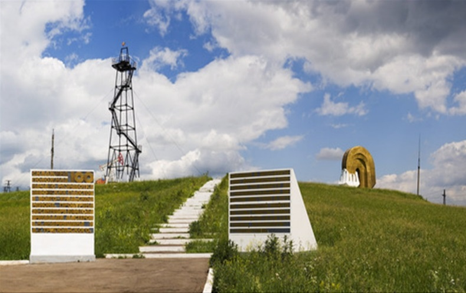
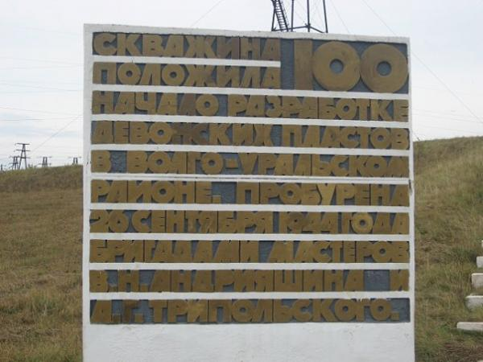

Скважина № 100

Местоположение
Памятник трудовой славы – скважина № 100 – первооткрывательница девонской нефти в Туймазинском районе. Находится в г. Октябрьском, посёлке Нарышево, на склоне горы Нарыш-тау.
История

В конце 1943 года начато строительство разведочной буровой № 100. С 26 сентября 1944 по 1 февраля 1968 года скважина была в эксплуатации. На скважине сохранена эксплуатационная вышка и установлены бетонные стелы: одна с надписью: «Скважина № 100 положила начало разработке Девонских пластов в Волго-Уральском регионе. Пробурена 26 сентября 1944 г. бригадами мастеров В.Н. Андрияшина и А.Т. Трипольского», вторая изображает стилизованный фонтан нефти. Решением Октябрьского горсовета народных депутатов от 12.02.1981 г. памятник взят под госохрану.